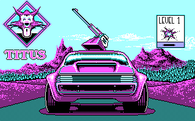
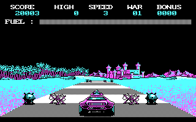

名稱：霹靂飛車 (Fire and Forget，英文版) 簡介：Titus 1988年出品的汽車駕駛射擊遊戲，台灣由智冠代理進口 [待補]。

保護：磁片，破解碼： FIRE.EXE 75 24 8B 1D EB -- -- -- 3A 54 75 03 -- -- 90 90 BB 53 0F B9 00 28 33 ED B4 00 CD 13 49 41 33 D2 E9 7F 00 -- -- -- -- -- -- -- -- -- -- -- B2 01 41 3A 5C 43 48 5C 44 31 2E 44 45 43 00 43 48 -- 44 31 2E -- 45 43 00 -- -- -- 41 3A 5C 46 49 4C 45 53 5C 45 43 00 46 49 4C 45 53 5C -- 43 00 -- -- -- 41 3A 5C 44 45 43 4F 52 00 41 3A 5C 46 49 4C 45 53 5C 47 52 41 50 48 00 44 45 43 4F 52 00 -- -- -- 46 49 4C 45 53 5C 47 52 41 50 48 00 -- -- -- 41 3A 5C 46 49 4C 45 53 5C 4D 41 53 4B 00 41 3A 5C 46 49 4C 45 53 5C 46 49 4C 45 53 5C 4D 41 53 4B 00 -- -- -- 46 49 4C 45 53 5C -- 43 00 41 3A 5C 46 49 4C 45 53 5C 70 72 65 73 00 41 3A 5C 46 4F 4E 54 00 46 49 4C 45 53 5C 70 72 65 73 00 -- -- -- 46 4F 4E 54 00 -- -- -- 41 3A 5C 46 49 4C 45 53 5C 53 43 52 45 45 4E 00 46 49 4C 45 53 5C 53 43 52 45 45 4E 00 -- -- -- 41 3A 5C 46 49 4C 45 53 5C 43 41 52 54 45 00 41 3A 5C 46 49 4C 45 53 5C 45 43 00 46 49 4C 45 53 5C 43 41 52 54 45 00 -- -- -- 46 49 4C 45 53 5C -- 43 00 -- -- -- 41 3A 5C 4D 55 53 49 43 2E 42 49 4E 00 4D 55 53 49 43 2E 42 49 4E 00 -- -- -- 備註：電腦速度不可太快，否則可能會當機。 操作： 左右 = 左右轉 上 = 加速 下 = 減速 Space = 發射飛彈 F2 = 搖桿開關 F3 = 音效開關 F9 = 中止遊戲 F10 = 暫停遊戲 Esc = 離開遊戲